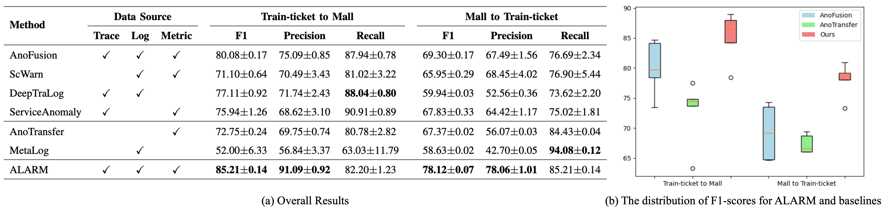
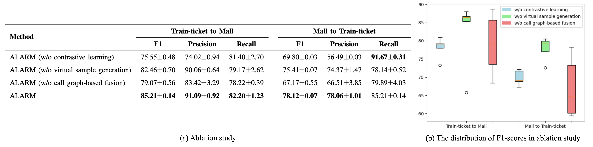

ALARM is a cross-system anomaly detection method for microservice systems using multi-modal transfer learning, outperforms state-of-the-art methods on an open-source benchmark and a real-world industrial microservice system.

Scenario: Proactive Anomaly Detection in Microservices Using Multimodal Data
Microservice architectures have emerged as a dominant paradigm for constructing scalable and agile systems, where numerous independently deployable services collaborate to handle user requests. However, the intricate interactions between microservices and the rapid evolution of their technical stacks introduce significant challenges in maintaining system reliability. Proactive anomaly detection in such environments is critical yet daunting, as anomalies can manifest across heterogeneous multimodal data streams—including traces, logs, and metrics—each capturing distinct aspects of system behavior (e.g., invocation topologies, operational events, and performance indicators).
Challenges: Up-to-date labels unavailable
This challenge arises from two factors. First, frequent changes in microservice systems render old label data obsolete and unusable. Second, the increasing intricacy of microservices interactions makes it extremely difficult to obtain accurate human labels, requiring substantial labeling costs.
Our propose method: ALARM
We therefore propose ALARM, a novel anomaly detection method that leverages existing labeled multimodal data from other systems to build effective anomaly detection models for the target microservice system.
To mitigate the obstacles posed by complex relationships and inconsistency in data quality,
on the one hand, ALARM introduces a user call-based graph fusion method to effectively model inter-modal and inter-microservices relationships.
On the other hand, ALARM employs contrastive learning combined with virtual sample generation techniques to balance the two learning processes, increasing diversity from both aspects and thereby alleviating overfitting in modalities and domains.

Multi-modal data in microservices
overview of ALARM
ALARM outperforms state-of-the-art methods on an open-source benchmark and a real-world industrial microservice system.
All components play important roles to improve performance off ALARM.
ALARM demonstrates relatively stable performance when the generation rate 𝛼 fluctuates between 0.1 and 0.7.